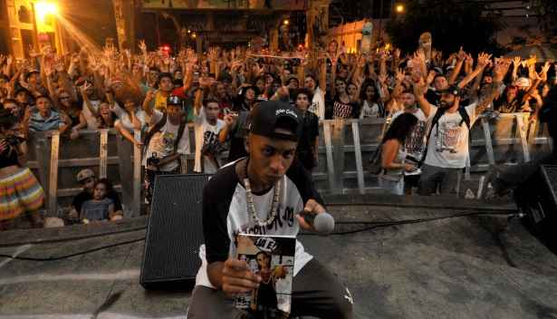

História de Flávio Castro
Mc Orochi, o rapper de apenas 22 anos que ficou famoso após gravar um vídeo "gastando" sua mãe na rima, lá em 2013, que viralizou rapidamente. De um menino que rimava por diversão, até virar um dos maiores do país.
Onde nasceu Orochi?
Natural de São Gonçalo, região metropolitana do Rio, Orochi ficou conhecido em uma batalha perto de onde morava.
O jovem negro, baixo e magro, totalmente diferente do personagem Orochi do jogo de fliperama The King Of Fighters, acumulou 21 vitórias consecutivas naquele espaço.
Carreira e conquistas
Com apenas 14 anos, deu início em sua carreira, e já se destacava por sua capacidade
de improviso e "gastação".
Pouco tempo depois, Orochi entraria para um grupo chamado Modéstia Parte, composto na
época por Bruno Maquiny, Azevedo, entre outros.
Grupo onde emplacou hits como Te Encontrar,
Cálices
e
Goles Perdidos,
somando mais de 100 milhões de visualizações no YouTube até ali. O sucesso o fez viajar pelo país todo para apresentar o seu trabalho.
No mesmo ano, Mc Orochi foi classificado para o Duelo Nacional de Mc's, o maior evento do país, no quesito batalhas de rima. Naquele Nacional, sua primeira música "Te encontrar" já fazia sucesso, e ele era um dos favoritos ao título, que se confirmou, pois defendendo a cidade de São Gonçalo, conquistou o título, com apenas 15 anos, sendo o mais jovem da história a atingir tal feito.

Hoje, Orochi está aposentado das batalhas de rima, pois seu foco principal são as músicas.
A cultura de rua pode e deve estar no mainstream. Assim surgiu o nome Mainstreet, que Orochi carrega tatuado na cabeça. uma das maiores gravadoras do rap/trap nacional, que conta
com artistas renomeados, como Mc Poze,
Borges,
Bin,
Oruam,
Chefin, entre outros.
Com a carreira consolidada e já conhecido no cenário hip hop, Orochi foi detido no início de 2019 por porte de drogas (cannabis) e desacato à autoridade. Estava a caminho de um show na Região dos Lagos, quando foi parado pela Polícia Rodoviária. Sabia que a repercussão do caso poderia prejudicar a influência que tem para muitos jovens negros de comunidade. Uma reportagem alegou prisão por porte de arma, o que não ocorreu.
Poderia ser o fim de uma carreira que estava apenas começando. Orochi transformou o pesadelo em música.
Nove dias depois do ocorrido, o rapper lançou a faixa “Balão”, sabendo a importância da sua mensagem no rap. Com os versos “quase que eu caio na ilusão, na ilusão/Mas vi que aquilo lá não era pra mim”, ele desabafa por quase ter caído no mesmo destino de muitos jovens negros do Brasil. Mas a sua letra mostra como o caminho da música foi importante para sua vida: “a mídia não me deu um troféu quando eu fui campeão nacional. Agora quer me fazer de réu.”.
Em 2020, já sendo um dos maiores nomes do rap nacional, Orochi lança o álbum "Celebridade", que conta com 15 faixas, sendo uma delas sua música mais famosa "Amor de fim de noite ".
Em entrevista ao QG Globo, Orochi falou um pouco sobre o álbum: "Orochi: A fase de testes foi muito boa (ri). Costumo dizer que todos os trabalhos que eu fiz antes de soltar esse álbum foram como se fosse um teste.
Participei de diversos feat (participações) e projetos de outros artistas, lancei alguns singles, mas na verdade eu estava testando as vibes. Estudei o que eu poderia fazer, onde eu poderia explorar e qual seria a vibe que eu colocaria nesse disco.
Eu tinha o receio de só criar um álbum e jogar na risca para ver o que aconteceria.
Foram 5 anos que fiquei fazendo músicas com um grupo (Modéstia Parte), participei de projetos grandes como o “Poesia Acústica” e assim consegui trazer esse equilíbrio no álbum. Esse número de seguidores é porque o público já estava curtindo a minha ideia"
Já em 2021, após o sucesso de seu primeiro álbum, Orochi lança "Lobo", álbum que conta com participações de Mc Poze, Borges, PL Quest e BIN. Na produção do disco, trabalharam Kizzy e Ajaxx.
Orochi se tornou um dos maiores rappers e empresários da cena, quando criou a mainstreet.
Lá em 2020, em entrevista ao QG Globo, o mesmo disse um pouco sobre isso: "Minha vida é movida por sonhos. Primeiro eu queria participar das batalhas, queria me tornar um MC referência em rima. Realizei em 2015, quando eu tinha 15 anos, fui considerado o melhor do Brasil, o mais jovem que teve. O próximo sonho era viver de música. Com aquele convívio de roda cultural, rap, criei o grupo, (Modéstia Parte) conseguimos rodar o Brasil fazendo música.
Depois foi fazer o Orochi conseguir se estruturar e estruturar a própria família. Após a epidemia eu tenho mais um sonho: fazer a Mainstreet dar certo. É o nome de uma futura gravadora, produtora, onde estamos trabalhando a carreira de outros artistas. Quero que seja uma banca nova do Hip Hop capaz de alcançar outras sonoridades. Produzir outros artistas é o meu próximo sonho.
E então, será que a Mainstreet deu certo?